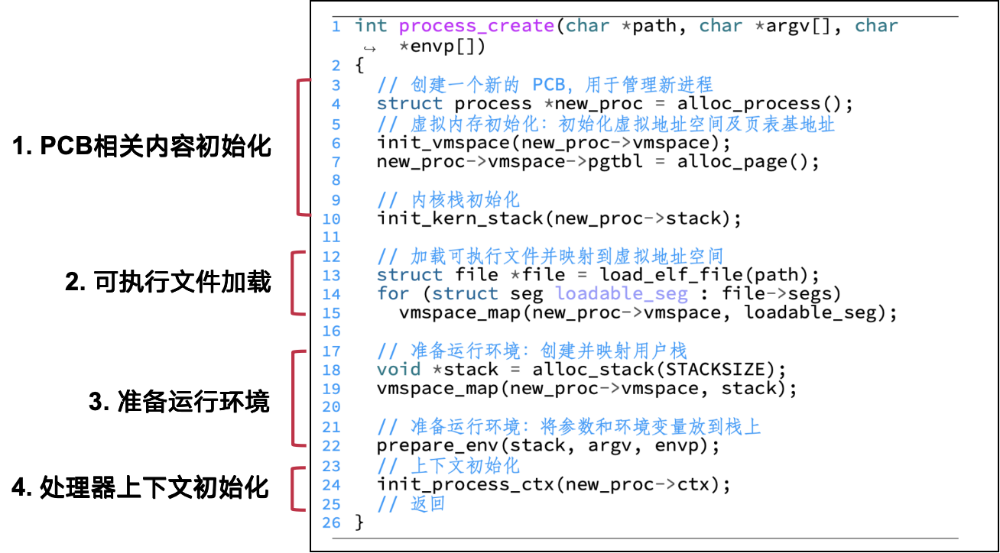
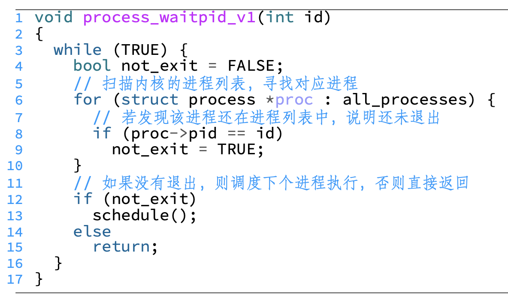
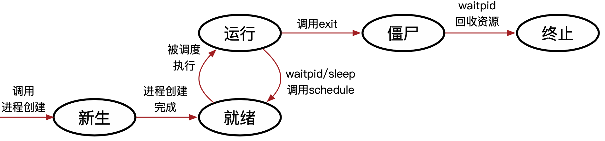
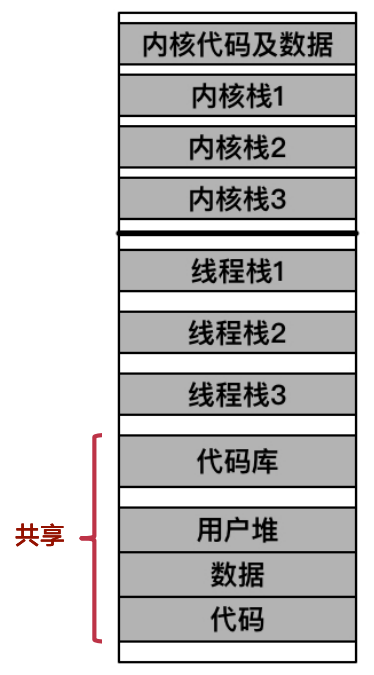
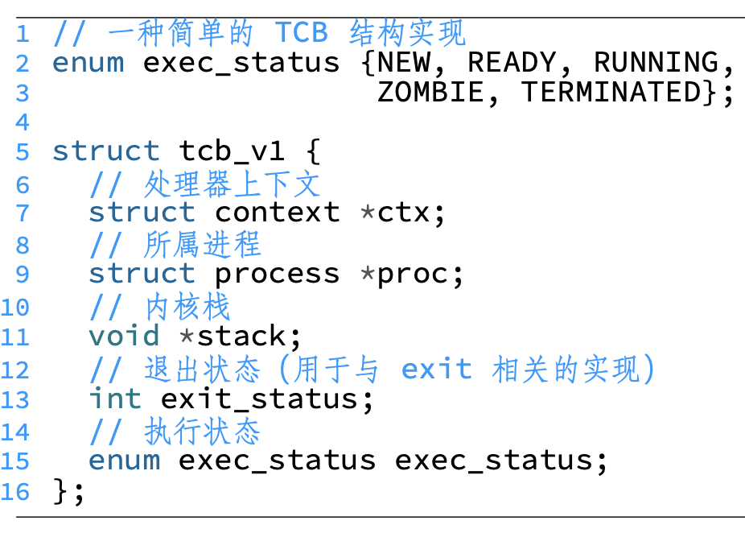
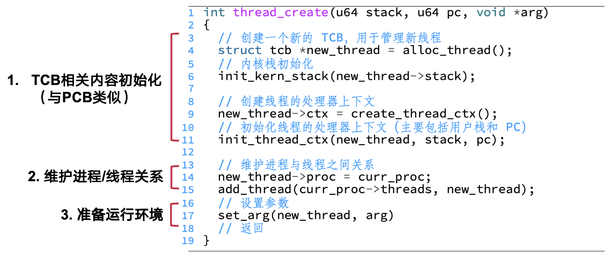
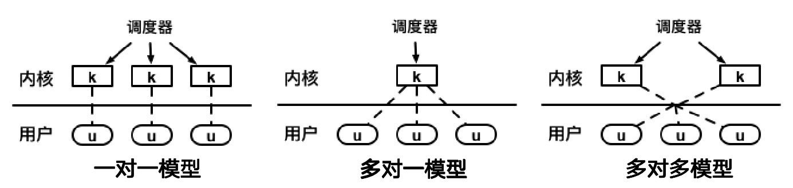
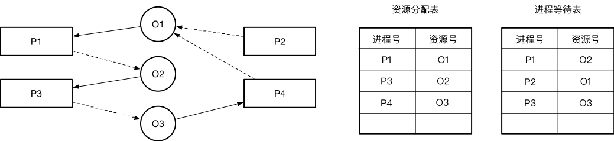
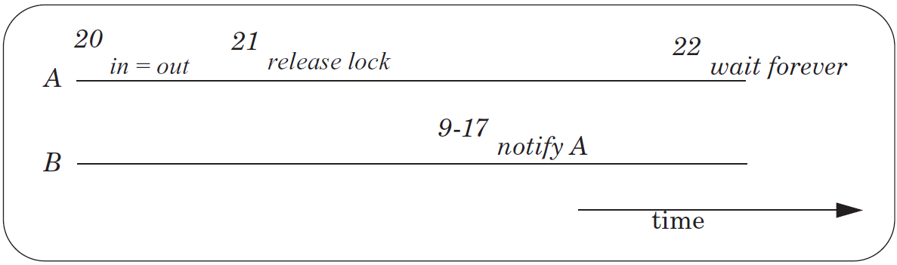
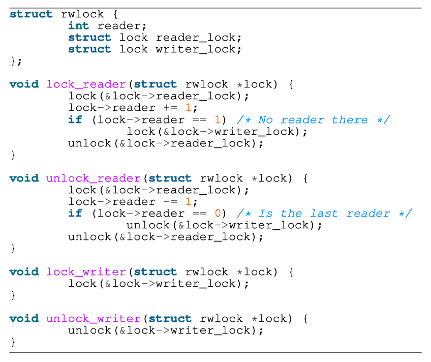

操作系统 SJTU 版(3)：进程管理
Last updated on January 9, 2026 pm
这是《操作系统》SJTU-CS3601 课程的课程笔记系列。本文整理部分为“第 3 部分：进程管理”。
Lecture 9: 进程
- 进程的状态数据：
- 进程标识号（PID）
- 运行状态：处理器上下文（CPU Context）
- 地址空间
- 打开的文件
- 处理器上下文：包含恢复进程执行所需要的状态
- 具体包括：PC 寄存器值，栈寄存器值，通用寄存器值，状态寄存器值
进程的表示: PCB
- 进程：进程是计算机程序运行时的抽象
- 静态部分：程序运行需要的代码和数据
- 动态部分：程序运行期间的状态（程序计数器、堆、栈等）
- 进程控制块（PCB）：每个进程都对应一个元数据，称为“进程控制块” （PCB）
- 进程控制块存储在内核态
- 进程控制块中包括：独立的虚拟地址空间、独立的处理器上下文、内核栈
- 内核栈：
- 进程在内核中依然需要执行代码，有读写临时数据的需求
- 进程在用户态和内核态的数据应该相互隔离，增强安全性
进程的创建
- 创建和初始化的内容：
- 用户视角：代码、数据、堆栈
- 内核视角：PCB、虚拟地址空间、上下文、内核栈

-
一、PCB 相关初始化：PCB 及其包含的内容都需要创建及初始化
- 分配 PCB 本身的数据结构
- 初始化 PCB：虚拟内存
- 创建及初始化 vmspace 数据结构
- 分配一个物理页，作为顶级页表
- 内核栈：分配物理页，作为进程内核栈
-
二、可执行文件加载：可执行文件通常有固定的存储格式，以 ELF（Executable and Linkable Format）为例
- 从程序头部表可以获取需要的段所在位置
- 通常只有代码段和数据段需要被加载（loadable）
- 加载即从 ELF 文件中映射到虚拟地址空间的过程
-
三、准备运行环境：在返回用户态运行前，还需为进程准备运行所需的环境
- 分配用户栈：分配物理内存并映射到虚拟地址空间
- 准备程序运行时的环境：将参数和环境变量放到栈上
-
四、处理器上下文初始化：最后才初始化处理器上下文，因为其包含的内容直到前序操作完成才确定
- SP：用户栈分配后才确定地址
- PC（保存在 ELR_EL1）：加载 ELF 后才知道入口所在地址
- 大部分寄存器初始值可直接赋为 0
进程的退出与等待
- 进程退出的实现：
- 销毁 PCB 及其中保存的所有内容
- 告知内核，选择其他进程执行

- 进程等待（
process_waitpid）的实现：- 为每个进程引入进程标识符（pid），记录在 PCB 中
- 仍然调用
schedule，让其他进程执行，自己在while循环中等待 - 改进1：为进程添加退出状态支持
- PCB：增加退出状态
- process_exit：退出前设置退出状态
- 改进2：修改
process_waitpid- 如果进程已设置为退出，则记录其退出状态并回收
- 将进程资源的回收操作从 exit 移到了 waitpid
- 改进3：限制进程等待的范围（安全性）
- 目标：只有创建某进程的程序才能监控它
- 实现：引入父（创建者）子（被创建者）进程概念
- 进程之间的创建关系构建了一棵进程树，第一个进程（树根）通常由内核主动创建
- PCB：维护子进程列表
- waitpid：扫描子进程列表而不是所有进程
- 若父进程不调用 waitpid，则在父进程退出后，由 init 进程代管并回收
进程的状态
- 进程睡眠：不断查看时间，如果未到规定时间则继续等待
- 进程的五种典型执行状态：
- 新生（new）：刚调用
process_create - 就绪（ready）：随时准备执行（但暂时没有执行）
- 运行（running）：正在执行
- 僵尸（zombie）：退出但未回收
- 终止（terminated）：退出且被回收
- 新生（new）：刚调用

- 调度：目的是选出下一个可以执行（就绪）的进程
- PCB 结构：增加执行状态
- 调度逻辑片段：只选择状态为 READY 的进程
案例分析：LINUX 进程创建
-
fork()创建进程：为调用进程创建一个一模一样的新进程- 调用进程为父进程，新进程为子进程
- 接口简单，无需任何参数
- fork 后的两个进程均为独立进程
- 拥有不同的进程id
- 可以并行执行，互不干扰（除非使用特定的接口）
- 父进程和子进程会共享部分数据结构（内存、文件等）
- fork 后父子进程顺序不确定，视调度策略而定
- 使用 fork 的返回值来分辨父/子进程：
- 0: 子进程
- 非 0（子进程id）：父进程
-
fork()的实现：将父进程的 PCB 拷贝一份- 包括 PCB、内核栈、处理器上下文等，实现比较简单
-
fork的优点：- 接口非常简洁，（过去）实现简单
- 将进程创建和执行（
exec）解耦，提高了灵活度
-
fork的缺点：- 创建拷贝的复杂度与 PCB 复杂度相关（如今越来越复杂）
- 完全拷贝过于粗暴（不如
clone） - 性能差、可扩展性差（不如
vfork和spawn） - 不可组合性 (如
fork()+pthread())
-
fork的替代接口：vfork：类似于fork，但让父子进程共享同一地址空间- 优点：连映射都不需要拷贝，性能更好
- 缺点：只能用在“
fork+exec”的场景中；共享地址空间存在安全问题
posix_spawn: 相当于fork+exec- 优点：可扩展性、性能较好
- 缺点：不如
fork灵活
clone:fork的进阶版，可以选择性地不拷贝内存- 优点：高度可控，可依照需求调整
- 缺点：接口比
fork复杂，选择性拷贝容易出错
进程切换
-
进程切换的基本步骤：
- 进程1进入内核态
- 进程1处理器上下文保存
- 进程上下文切换
- 进程2处理器上下文恢复
- 进程2返回用户态
-
处理器上下文与进程上下文：
- 处理器上下文：用于保存切换时的寄存器状态（硬件）
- 在每个 PCB 中均有保存
- 进程上下文：表示目前操作系统正以哪个进程的身份运行（软件）
- 通常使用一个指向 PCB 的全局指针表示
- 处理器上下文：用于保存切换时的寄存器状态（硬件）
-
进程切换的节点：所有调用
schedule()的地方- 告知内核选择下一个执行的进程，也就涉及到了进程的切换
-
一、p0 进入内核态：由硬件完成部分寄存器保存
- PC 和 PSTATE 分别自动保存到 ELR_EL1 和 SPSR_EL1
-
二、p0 处理器上下文保存：将处理器中的寄存器值保存到处理器上下文对应的位置
-
三、由 p0 切换到 p1：
- 1. 虚拟地址空间切换：设置页表相关寄存器（TTBR0_EL1）
- 使用 PCB 中保存的页表基地址赋值给 TTBR0_EL1
- 2. 内核栈切换：设置内核中的栈寄存器 SP_EL1
- 使用 PCB 中保存的内核栈顶地址赋值给 SP_EL1
- 3. 进程上下文切换：设置
cur_proc为之后要执行的进程（p1）- 表明之后操作系统将以 p1 的身份运行
- 1. 虚拟地址空间切换：设置页表相关寄存器（TTBR0_EL1）
-
四、p1 处理器上下文恢复：从处理器上下文中加载各寄存器的值，放入对应寄存器中
-
五、p1 回到用户态：由硬件自动恢复部分寄存器
- 将 ELR_EL1 和 SPSR_EL1 中的值自动保存到 PC 和 PSTATE 中
Lecture 10: 线程
为什么需要线程
-
进程的问题：
- 创建进程的开销较大：包括了数据、代码、堆、栈等
- 进程的隔离性过强：进程间交互可以通过进程间通信（IPC），但开销较大
- 进程内部无法支持并行
-
背景：单台设备计算资源逐渐丰富
- 多核处理器在 21 世纪初逐渐兴起
- 大型计算机包含大量多核处理器
-
简单方法：进程+调度
- 进程数量一般远超过 CPU 核数
- 调度器通过分时复用增加计算资源利用率
- 存在局限：单一进程无法利用多核资源
- 解决思路：用
fork创建相似进程
-
Fork 方法存在的局限：
- 进程间隔离过强，共享数据困难
- 各进程拥有独立的地址空间，共享需以页为粒度
- 协调困难，需要复杂的通信机制（如管道）
- 进程管理开销较大
- 创建：地址空间复制
- 切换：页表切换
- 进程间隔离过强，共享数据困难
-
解决方案：使单一进程跨核执行
- 优势：无需用
fork创建新进程- 降低进程管理开销
- 同一地址空间数据共享/同步方便
- 需要的支持：
- 处理器上下文：不同核执行状态不同，需要独立处理器上下文
- 优势：无需用
-
线程：更加轻量级的运行时抽象
- 线程只包含运行时的状态
- 静态部分由进程提供
- 包括了执行所需的最小状态（主要是寄存器和栈）
- 一个进程可以包含多个线程
- 多个线程共享同一地址空间（方便数据共享和交互）
- 允许进程内并行
- 线程只包含运行时的状态
线程的使用：pthread 接口
-
常用库：POSIX threads（pthreads）
- 实现的功能与进程相关系统调用相似
- 创建：
pthread_create，创建子线程并获得子线程 id（tid） - 回收：
pthread_join，等待 tid 对应线程退出并回收 - 退出：
pthread_exit，只退出当前线程 - 一个线程执行系统调用，可能影响该进程的所有线程（如
exit会使所有线程退出）
-
程序控制流分析：
- 主线程创建子线程后，两线程独立执行
- 建子线程后，两线程独立执行
- 若主线程先执行，则
exit被调用，子线程直接被终止
- 若主线程先执行，则
-
基于
join的方法的问题： 需要主线程手动调用回收资源- 若主线程未调用则可能出现资源溢出
- 解决方案：加入
detach操作，调用detach可使线程进入“分离”状态- 分离线程不能被其他线程杀死或回收，退出时资源自动回收
-
pthreads使用小结：- 常用接口：创建、合并、分离、退出
- 线程资源默认需要手动回收：
- 主线程可使用合并（
pthread_join）回收其他线程 - 也可调用分离（
pthread_detach）使其他线程自动回收
- 主线程可使用合并（
- 主线程退出默认会终结所有线程
- 可改为调用退出（
pthread_exit），只退出主线程
- 可改为调用退出（
线程
-
多线程的进程：
- 一个进程可以包含多个线程
- 一个进程的多线程可以在不同处理器上同时执行
- 调度的基本单元由进程变为了线程
- 每个线程都有自己的执行状态
- 切换的单位由进程变为了线程
-
多线程进程的地址空间：
- 每个线程拥有自己的栈
- 内核中也有为线程准备的内核栈
- 其它区域共享：数据、代码、堆

- 线程与进程的对比
- 相似之处：
- 都可以与其他进程/线程并发执行（可能在不同核心上）
- 都可以进行切换
- 引入线程后，调度管理单位由进程变为线程
- 不同之处：
- 同一进程的不同线程共享代码和部分数据
- 不同进程不共享虚拟地址空间
- 线程与进程相比开销较低
- 进程控制（创建和回收）通常比线程更耗时
- 同一进程的不同线程共享代码和部分数据
- 相似之处：
线程的实现
- 线程的表示：TCB（线程控制块）
- 将 PCB 中部分内容移入 TCB 中：
- 每个线程 TCB 保存自己的处理器上下文、内核栈、退出/执行状态
- 进程 PCB 仍维护共享的地址空间
- PCB/TCB 间相互引用，便于管理
- 将 PCB 中部分内容移入 TCB 中：

-
内核栈：除 TCB 外，每个线程也使用独立的内核栈
- 便于各线程在内核中独立执行
-
线程创建的实现：与进程创建相比步骤更少（如不需要加载可执行文件）

- 线程退出与合并的实现：与进程退出/等待的实现类似，线程退出时销毁内容更少（如不需要销毁 vmspace）

-
与进程管理接口的关系：以
fork为例，一个多线程的程序调用fork- 实现方式1：拷贝父进程中所有的线程
- 实现方式2：只拷贝父进程中调用
fork的线程 - POSIX 建议：尽量避免用
fork拷贝多线程程序
-
用户态线程与内核态线程：根据线程是否受内核管理，可以将线程分为两类：
- 内核态线程：内核可见，受内核管理
- 由内核创建，线程相关信息存放在内核中
- 用户态线程（纤程）：内核不可见，不受内核直接管理
- 在应用态创建，线程相关信息主要存放在应用数据中
- 内核态线程：内核可见，受内核管理
-
线程模型：表示了用户态线程与内核态线程之间的联系
- 多对一模型：多个用户态线程对应一个内核态线程
- 优点：内核管理简单
- 缺点：可扩展性差，无法适应多核机器的发展
- 在主流操作系统中被弃用
- 用于各种用户态线程库中
- 一对一模型：一个用户态线程对应一个内核态线程
- 优点：解决了多对一模型中的可扩展性问题
- 缺点：内核线程数量大，开销大
- 主流操作系统都采用一对一模型
- 多对多模型：多个用户态线程对应多个内核态线程
- 优点：解决了可扩展性问题（多对一）和线程过多问题（一对一）
- 缺点：管理更为复杂
- 在虚拟化中得到了广泛应用
- 多对一模型：多个用户态线程对应一个内核态线程

- 一对一模型的 TCB：可以分为两部分
- 内核态：与 PCB 结构类似，线程切换中会使用
- 应用态：可以由线程库定义，可以认为是内核TCB的扩展
Lecture 11: 处理器调度
处理器调度
-
调度的背景：系统中的任务数远多于处理器数
- 任务（Task）：线程、单线程进程
-
处理器调度：
- 对象：CPU 执行的最小单元，可以是进程或线程，统一用“任务”描述
- 时机：执行时间用尽；等待 I/O 请求；睡眠；中断；等
- 决策：下一个执行的任务；执行该任务的 CPU；执行的时长
-
调度：协调请求对于资源的使用
- 适用的场景：I/O (磁盘)、打印机、内存、网络包、…
- 共用的调度指标：高资源利用率、多任务公平性、低调度开销
- 降低周转时间：任务第一次进入系统到执行结束的时间
- 降低响应时间：任务第一次进入系统到第一次给用户输出的时间
- 实时性：在任务的截止时间内完成任务
- 公平性：每个任务都应该有机会执行，不能饿死
- 开销低：调度器是为了优化系统，而非制造性能 BUG
- 可扩展：随着任务数量增加，仍能正常工作
- 调度的挑战：
- 缺少信息（没有先知）：工作场景动态变化
- 任务间的复杂交互
- 调度目标多样性：不同的系统可能关注不一样的调度指标
- 许多方面存在取舍
-
Linux 中的调度策略：为了满足不同需求提供多种调度策略
- 以 Linux 两种调度器为例，每种对应多个调度策略：Complete Fair Scheduler (CFS)、Real-Time Scheduler (RT)
经典调度 (Classical Scheduling)
1. 先来先得（First Come First Served）
- 规则：按作业或进程到达的先后顺序进行服务
- 优点：简单、直观
- 问题：平均周转、响应时间过长
2. 短任务优先（Shortest Job First）
- 规则：（服务时间）最短的作业或进程优先得到服务
- 优点：平均周转时间短
- 问题：
- 不公平，长任务饿死
- 平均响应时间过长
- 需要预知任务执行时间
抢占式调度 (Preemptive Scheduling)
- 规则：每次任务执行一定时间后会被切换到下一任务，而非执行至终止
- 实现：通过定时触发的时钟中断实现
3. Round Robin (时间片轮转)
- 规则：
- 按照各进程到达就绪队列的顺序，轮流让各个进程执行一个时间片
- 若进程未在一个时间片内执行完，则剥夺 CPU，将进程重新放到就绪队列队尾重新排队
- 优点：轮询，公平、平均响应时间短
- 问题：
- 牺牲周转时间
- 时间片过短会导致调度开销过大
-
- 时间片大小的影响：
- 时间片太大：退化为 FCFS 算法，会增大进程响应时间
- 时间片太小：导致进程切换过于频繁，实际用于进程执行的时间比例减少
优先级调度 (Priority Scheduling)
- 优先级：用于确保重要的任务被优先调度
- 操作系统中的任务是不同的
- 如果不加以区分，系统关键任务无法及时处理
4. 多级队列 (Multi-Level Queue, MLQ)
- 规则：
- 维护多个队列，每个对应静态设置好的优先级
- 高优先级的任务优先执行
- 同优先级内使用 Round Robin 调度（也可使用其他调度策略）
- 问题：
- 低资源利用率
- 需要预知任务是否为 I/O 密集型任务
- 高优先级任务：
- I/O 密集型任务：为了更高的资源利用率
- 用户主动设置的重要任务
- 时延要求极高（必须在短时间内完成）的任务
- Linux Real-Time Scheduler：使用 Multi-level Queue 优先级调度
- 优先级的动态调整：
- 操作系统中的工作场景是动态变化的
- 静态设置的优先级可能导致：资源利用率低（优先级反转）、低优先级任务饥饿
5. 多级反馈队列 (Multi-Level Feedback Queue, MLFQ)
- 目标：一个无需先验知识的通用调度策略
- 周转时间低、响应时间低
- 调度开销低
- 思路：通过动态分析任务运行历史，总结任务特征
- 类似思想的体现：分支预测、缓存
- 需要注意：如果工作场景变化频繁，效果会很差
- 基本规则：
- 优先级高的任务会抢占优先级低的任务
- 每个任务会被分配时间片，优先级相同的两个任务使用时间片轮转
- 任务被创建时，假设该任务是短任务，为它分配最高优先级
- 一个任务时间片耗尽后，它的优先级会被降低一级
- 如果一个任务在时间片耗尽前放弃 CPU，那么它的优先级不变
- 任务重新执行时，会被分配新的时间片
- 案例：
- 对于长任务：MLFQ 会逐渐降低它的优先级，并将它视为长任务
- 对于短任务：它会很快执行完，证明自己是个短任务
- 对于 I/O 密集型任务：它会在时间片执行完以前放弃 CPU，MLFQ 保持它的优先级不变即可
- 基本规则的问题1：
- 长任务饥饿：过多的短任务、I/O 密集型任务可能占用所有 CPU 时间
- 任务特征可能动态变化：如 CPU 密集型任务 -> 交互式任务
- 定时优先级提升：在某个时间段 S 后，将系统中所有任务优先级升为最高
- 避免长任务饿死：
- 所有任务的优先级会定时地提升最高
- 最高级队列采用 RR，长任务一定会被调度到
- 针对任务特征动态变化的场景：MLFQ 会定时地重新审视每个任务
- 避免长任务饿死：
- 基本规则的问题2：无法应对抢占 CPU 时间的攻击
- 恶意任务在时间片用完前发起 I/O 请求
- 避免 MLFQ 将该任务的优先级降低，并且每次重新执行时间片会被重置，几乎独占 CPU
- 更准确地记录执行时间：一个任务时间片耗尽后（无论它期间放弃了多次 CPU，它的时间片不会被重置），它的优先级会被降低一级
- MLFQ 会记录每个任务在当前优先级使用的时间片
- 当累计一个完整时间片被用完后，降低其优先级
- MLFQ 的参数调试：
- 优先级队列的数量、不同队列的时间片长短、定时优先级提升的时间间隔
- 每个参数都体现了MLFQ的权衡：对于不同的工作场景，不同的参数会导致不一样的表现
- MLFQ 各个队列时间片长短的选择：
- 高优先级队列时间片较短，针对短任务：提升响应时间
- 低优先级队列时间片较长，针对长任务：降低调度开销
- MLFQ 小结：
- 通过观察任务的历史执行，动态确定任务优先级
- 无需任务的先验知识
- 同时达到了周转时间和响应时间两方面的要求
- 对于短任务，周转时间指标近似于 SJF
- 对于交互式任务，响应时间指标近似于 RR
- 可以避免长任务的饿死
- 通过观察任务的历史执行，动态确定任务优先级
6. 高响应比优先（Highest Response Ratio Next）
- 规则：在每次调度时先计算各个任务的响应比，选择响应比最高的任务为其服务
- 响应比（Response Ratio）：一个任务的响应时间 与其运行时间 的比值
- 如果两个任务等待时间 相同，则运行时间越短越优先
- 如果两个任务运行时间相同，则等待时间越长，越优先
- HRRN 策略通过结合 FCFS 策略和 SJF 策略，避免了 SJF 策略在公平性方面的问题
公平共享调度 (Fair-Share Scheduling)
- 公平共享：
- 每个用户占用的资源是成比例的，而非被任务的数量决定
- 每个用户占用的资源是可以被计算的，设定“份额”以确定相对比例
- 方法：使用 ticket 表示任务的份额
- ：ticket 的总量
7. 彩票调度 (Lottery Scheduling)
- 规则：
- 每次调度时，生成随机数
- 根据 ，找到对应的任务
- 彩票转让（Ticket Transfer）：
- 场景：在通信过程中，客户端需要等到服务端返回才能继续执行
- 客户端将自己所有的 ticket 转让给服务端
- 确保服务端可以尽可能使用更多资源，迅速处理
- 同样适用于其他需要同步的场景
- 份额与优先级的异同：
- 份额影响任务对 CPU 的占用比例，不会有任务饿死
- 优先级影响任务对 CPU 的使用顺序，可能产生饿死
- 随机的利弊：
- 好处：简单
- 问题：不精确，伪随机非真随机；各个任务对 CPU 时间的占比会有误差
8. 步幅调度 (Stride Scheduling)
- 确定性版本的 Lottery Scheduling
- Stride：步幅，任务一次执行增加的虚拟时间
- 是一个足够大的整数
- Pass：累计执行的虚拟时间
- 规则：每次调度时，挑选 Pass 最小的任务
| Lottery Scheduling | Stride Scheduling | |
|---|---|---|
| 调度决策生成 | 随机 | 确定性计算 |
| 任务实际执行时间与预期的差距 | 大 | 小 |
-
Linux Complete Fair Scheduler：通过调整任务每次执行的时间，达成公平共享的方式
-
虚拟时间对调度行为的影响：
- 虚拟时间的意义：
- 相对大小：对应了任务的优先级
- 绝对值：对应了任务预期占用 CPU 的时间长度
- 问题：如果新创建/刚被唤醒的任务 vruntime 很小，会立即长时间占用 CPU
- 解决方案
- 维护所有任务虚拟时间的最小值 min_vruntime
- 当任务被创建、唤醒时，保证任务的 vruntime 不小于 min_vruntime
- 虚拟时间的意义：
多核调度策略 (Multicore Scheduling Policy)
-
需要考虑的额外因素：一个进程的不同线程可以在不同 CPU 上同时运行
-
全局运行队列：
- 规则：所有 CPU 共享同一个全局运行队列
- 问题：
- 所有 CPU 竞争全局调度器
- 同一个线程可能在不同 CPU 上切换
- 切换开销大：Cache、TLB、…
- 缓存局部性差
-
本地运行队列：每个 CPU 核心维护本地运行队列
- 现被应用于 Linux、ChCore 等操作系统中
- 问题：负载不均衡
-
负载均衡：尽可能让每个 CPU 都同等忙碌
- 需要追踪 CPU 的负载情况
- 将任务从负载高的 CPU 迁移到负载低的 CPU
-
亲和性：尽量让一个进程调度到同一个 CPU 上运行，以发挥 CPU 中 Cache 的作用
- 通过操作系统暴露的任务亲和性接口，可以指定任务能够使用的 CPU 核心
Lecture 12: 进程间通信
-
IPC (Inter-Process Communication)：进程与进程间的通信方式
- 必要性：不同进程拥有不同的内存地址空间，进程与进程之间无法直接进行通信和交互
-
常见 IPC 的类型

简单 IPC 的设计与实现
- 简单 IPC 的消息接口：
- 发送消息：
Send(message) - 接收消息：
Recv(message) - 远程方法调用：
RPC(req_message, resp_message) - 远程方法调用的回复：
Reply(resp_message)
- 发送消息：
- 简单 IPC 的两个阶段：
- 阶段1：准备阶段
- 建立通信连接，即进程间的信道
- 假设内核已经为两个进程映射了一段共享内存
- 建立通信连接，即进程间的信道
- 阶段2：通信阶段
- 数据传递
- “消息”抽象：通常包含头部和数据内容（不能传指针）
- 通信机制
- 两个消息保存在共享内存中：发送者消息、接收者消息
- 发送者和接收者通过轮询消息的状态作为通知机制
- 数据传递
- 阶段1：准备阶段
- 简单 IPC 数据传递的两种方法：
- 方法1：基于共享内存的数据传递
- 操作系统在通信过程中不干预数据传输
- 操作系统仅负责准备阶段的映射
- 优势：
- 无需切换到内核态即可完成 IPC（多核场景下）
- 完全由用户态控制，定制能力更强
- 可实现零内存拷贝（无需内核介入）
- 方法2：基于操作系统辅助的数据传递
- 操作系统提供接口（系统调用）：Send、Recv
- 通过内核态内存来传递数据，无需在用户态建立共享内存
- 优势：
- 抽象更简单，用户态直接调用接口，使用更方便
- 安全性保证更强，发送者在消息被接收时通常无法修改消息
- 多方（多进程）通信时更灵活、更安全
- 方法1：基于共享内存的数据传递
- 简单 IPC 的通知机制：
- 方法1：基于轮询（消息头部的状态信息）
- 缺点：大量 CPU 计算资源的浪费
- 方法2：基于控制流转移
- 由内核控制进程的运行状态
- 优点：进程只有在条件满足的情况下才运行，避免 CPU 浪费
- 方法1：基于轮询（消息头部的状态信息）
- IPC 控制流：同步和异步
- 同步 IPC：IPC 操作会阻塞进程直到操作完成
- 线性的控制流
- 调用者继续运行时，返回结果已经 ready
- 异步 IPC：进程发起 IPC 操作后即可返回而不需要等待其完成
- 通过轮询或回调函数（需内核支持）来获取返回结果
- 同步 IPC：IPC 操作会阻塞进程直到操作完成
- IPC 的超时机制：
- 超时可能的原因：
- 被调用者是恶意的：故意不返回
- 被调用者不是恶意的：运行时间过长、调度时间过长、请求丢失等
- 超时机制：
- 应用可自行设置超时的阈值，但如何选择合适的阈值却很难
- 特殊的超时机制：阻塞、立即返回（要求被调用者处于可立即响应的状态）
- 超时可能的原因：
- IPC 的权限检查：
- 宏内核：通常基于权限检查的机制实现
- 如 Linux 中与文件的权限检查结合在一起
- 微内核：通常基于 Capability 安全检查机制实现
- Capability 保存在内核中，与进程绑定
- 进程发起 IPC 时，内核检查其是否拥有对应的 Capability
- 宏内核：通常基于权限检查的机制实现

共享内存 (内存接口的 IPC)
- 基础实现：
- 共享区域：共享区域容量、共享状态
1
2
3
4
5
6
7
8
9#define BUFFER_SIZE 10
typedef struct {
. . .
} item;
item buffer[BUFFER_SIZE];
volatile int buffer_write_cnt = 0;
volatile int buffer_read_cnt = 0;
volatile int empty_slot = BUFFER_SIZE;
volatile int filled_slot = 0;- 发送者(生产者)：当没有新消息时，接收者盲目等待
1
2
3
4
5
6
7
8
9
10while (new_package) {
/* Produce an item/msg */
while (empty_slot == 0)
; /* do nothing -- no free buffers */
empty_slot --;
buffer[buffer_write_cnt] = msg;
buffer_write_cnt = (buffer_write_cnt + 1) % BUFFER_SIZE;
filled_slot ++;
…
}- 接收者：当没有新消息时，接收者盲目等待
1
2
3
4
5
6
7
8
9while (wait_package) {
while (filled_slot == 0)
; // do nothing -- nothing to consume
filled_slot--; // remove an item from the buffer
item = buffer[buffer_read_cnt];
buffer_read_cnt = (buffer_read_cnt + 1) % BUFFER SIZE;
empty_slot++;
return item;
} - 共享内存的问题：
- 缺少通知机制：
- 若轮询检查，则导致 CPU 资源浪费
- 若周期性检查，则可能导致较长的等待时延
- 根本原因：共享内存的抽象过于底层；缺少 OS 更多支持
- TOCTTOU （Time-of-check to Time-of-use）问题：
- 当接收者直接用共享内存上的数据时，可能存在被发送者恶意篡改的情况（发生在接收者检查完数据之后，使用数据之前）
- 这可能导致 buffer overflow 等问题
- 缺少通知机制：
消息传递（Message Passing）
- 消息队列：消息队列是间接消息传递方式，通过共享一个队列来建立连接
- 以链表的方式组织消息
- 任何有权限的进程都可以访问队列，写入或者读取
- 支持异步通信 (非阻塞)
- 消息的格式：类型 + 数据
- 消息队列的组织：
- 基本遵循 FIFO 先进先出原则
- 消息队列的写入：增加在队列尾部
- 消息队列的读取：默认从队首获取消息
- 允许按照类型查询:
Recv(A, type, message)- 如
type为正数，则返回第一个类型为type的消息
- 如
轻量级远程方法调用 (LRPC)
- LRPC 解决的问题：
- 控制流转换：Client 进程快速通知 Server 进程
- 数据传输：将栈和寄存器参数传递给 Server 进程
- 控制流转换：调度导致不确定时延
- 控制流转换需要下陷到内核
- 内核系统为了保证公平等，会在内核中根据情况进行调度
- Client 和 Server 之间可能会执行多个不相关进程
- 迁移线程：将 Client 运行在 Server 的上下文
- 使用 Server 的代码和数据，使用 Server 的权限 (如访问某些系统资源)
- 只切换地址空间、权限表等状态，不做调度和线程切换
- 数据传输：数据拷贝的性能损失
- 大部分 Unix 类系统，经过内核的传输有(至少)两次拷贝 (Client -> 内核 -> Server)
- 数据拷贝：慢（拷贝本身的性能就不快）；不可扩展（数据量增大，时延增大）
- 共享参数栈和寄存器：
- 参数栈 (A-stack)：
- 系统内核为每一对 LRPC 连接预先分配好一个 A-stack
- A-stack 被同时映射在 Client 进程和 Server 进程地址空间
- Client 进程只需要将参数准备到 A-stack 即可，不需要内核额外拷贝
- 执行栈 (E-stack)
- 共享寄存器：
- 普通的上下文切换：保存当前寄存器状态 -> 恢复切换到的进程寄存器状态
- LRPC 迁移进程：直接使用当前的通用寄存器，类似函数调用中用寄存器传递参数
- 参数栈 (A-stack)：
- 通信连接建立：
- Server 进程通过内核注册一个服务描述符
- 对应 Server 进程内部的一个处理函数
- 内核为服务描述符预先分配好参数栈
- 内核为服务描述符分配好调用记录，用于从 Server 进程处返回（类似栈）
- 内核将参数栈交给 Client 进程，作为一个绑定成功的标志
- 在通信过程中，通过检查 A-stack 来判断 Client 是否正确发起通信
- Server 进程通过内核注册一个服务描述符
- 一次调用过程：
- 内核验证绑定对象的正确性，并找到正确的服务描述符
- 内核验证参数栈和连接记录
- 检查是否有并发调用 (可能导致 A-stack 等异常)
- 将 Client 的返回地址和栈指针放到连接记录中
- 将连接记录放到线程控制结构体中的栈上 (支持嵌套 LRPC 调用)
- 找到 Server 进程的 E-stack (执行代码所使用的栈)
- 将当前线程的栈指针设置为 Server 进程的运行栈地址
- 将地址空间切换到 Server 进程中
- 执行 Server 地址空间中的处理函数
Binder IPC
- Binder IPC：兼具IPC数据传输的高性能与高安全
- 框架层 Binder 服务框架：发现服务，接口封装
- 内核层 Binder 驱动：提供内核层 IPC 能力
- Binder IPC 数据传输：通过内存映射减少 IPC数据拷贝
- 发送端一次数据拷贝，接受端零次数据拷贝
- 数据序列化：
- 问题：复杂数据结构无法直接跨进程传输
- 数据结构嵌套
- 指针、文件描述符等接收端无法访问
- 方案：序列化与反序列化
- 序列化：将数据结构展开为一个字节串
- 反序列化：将字节串转换为原有数据结构
- 问题：复杂数据结构无法直接跨进程传输
- Binder IPC 数据序列化：内核辅助完成特殊对象传输
- 文件描述符、句柄等
- 定位特殊对象位置 + 帮助接收端进程重构特殊对象
- 服务端线程数量：
- IPC 请求需要服务端线程的处理：一个 IPC Server 可能处理大量 Client 请求
- 少量服务线程 -> 无法应对高负载任务
- 大量服务线程 -> 低负载时浪费资源
- Binder IPC 线程池模型：
- 服务端设置最大线程数量
- 内核动态创建服务线程：默认从服务线程池挑选处理线程，服务线程不足自动创建
Lecture 13: 同步原语
并发带来的同步问题：竞争条件
- 竞争条件：
- 当 2 个或以上线程同时对共享的数据进行操作，其中至少有一个写操作
- 该共享数据最后的结果依赖于这些线程特定的执行顺序
生产者消费者与多生产者消费者
- 临界区（Critical Section）：任意时刻，有且只有一个线程可以进入临界区执行
- 实现临界区抽象的三个要求：
- 互斥访问：在同一时刻，有且仅有一个线程可以进入临界区
- 有限等待：当一个线程申请进入临界区之后，必须在有限的时间内获得许可进入临界区而不能无限等待
- 空闲让进：当没有线程在临界区中时，必须在申请进入临界区的线程中选择一个进入临界区，保证执行临界区的进展
- 同步原语（Synchronization Primitives）：一个平台（如操作系统）提供的用于帮助开发者实现线程之间同步的软件工具
- 在有限的共享资源上正确的协同工作
互斥锁
- 互斥锁（Mutual Exclusive Lock）接口：保证同时只有一个线程能够拿到锁
Lock(lock)：尝试拿到锁lock- 若当前没有其他线程拿着 lock，则拿到 lock，并继续往下执行
- 若 lock 被其他线程拿着，则不断循环等待放锁（busy loop）
Unlock(lock)：释放锁
条件变量
- 条件变量：利用睡眠/唤醒机制，避免无意义的等待
- 让操作系统的调度器调度其他进程/线程执行
- 等待的接口：
void cond_wait(struct cond *cond, struct lock *mutex);- 放入条件变量的等待队列
- 阻塞自己同时释放锁：即调度器可以调度到其他线程
- 被唤醒后重新获取锁
- 唤醒的接口：
void cond_signal(struct cond *cond);- 检查等待队列
- 如果有等待者则移出等待队列并唤醒
信号量（Semaphore）
- 信号量 （PV 原语）：协调（阻塞/放行）多个线程共享有限数量的资源
- 语义上：信号量的值 cnt 记录了当前可用资源的数量
- 提供了两个原语 P 和 V 用于等待/消耗资源
- P 操作：消耗资源
- V 操作：增加资源
1 | |
1 | |
- 二元信号量：初始化的资源数量为 1
- 其计数器（counter）只有可能为 0、1 两个值
- 同一时刻只有一个线程能够拿到资源
- 计数信号量：初始化的资源数量大于 1
- 同一时刻可能有多个线程能够拿到资源
读写锁
- 互斥锁：所有的线程均互斥，同一时刻只能有一个线程进入临界区
- 对于部分只读取共享数据的线程过于严厉
- 读写锁：区分读者与写者，允许读者之间并行，读者与写者之间互斥

不同同步原语之间的比较
- 互斥锁/条件变量/信号量：
- 互斥锁与二元信号量功能类似，但抽象不同：
- 互斥锁有拥有者的概念，一般同一个线程拿锁/放锁
- 信号量为资源协调，一般一个线程 signal，另一个线程 wait
- 条件变量用于解决不同问题（睡眠/唤醒），需要搭配互斥锁使用
- 搭配互斥锁+计数器可以实现与信号量相同的功能
- 互斥锁与二元信号量功能类似，但抽象不同：
- 互斥锁 vs 读写锁：
- 接口不同：读写锁区分读者与写者
- 针对场景不同：获取更多程序语义，标明只读代码段，达到更好性能
- 读写锁在读多写少场景中可以显著提升读者并行度，即允许多个读者同时执行读临界区
- 只用写者锁，则与互斥锁的语义基本相同
同步带来的问题：死锁
- 死锁产生的原因：
- 互斥访问：同一时刻只有一个线程能够访问
- 持有并等待：一直持有一部分资源并等待另一部分，不会中途释放
- 资源非抢占：即 proc_B 不会抢 proc_A 已经持有的锁 A
- 循环等待：存在一种进程资源的循环等待链（A 等 B，B 等 A）
- 死锁的处理策略：
- 死锁检测与恢复：允许死锁发生，系统负责检测出死锁并解除（出问题再处理）
- 避免死锁：避免系统进入不安全状态（设计时避免）
- 预防死锁：破坏死锁产生的四个必要条件（运行时避免）
死锁的检测与恢复
- 资源分配图：
- 两种结点：
- 进程结点：对应一个进程
- 资源结点：对应一类资源，一类资源可能有多个
- 两种边：
- 资源节点 --> 进程结点（分配边）：表示已经为进程分配了几个资源（每条边代表一个）
- 进程结点 --> 资源结点（请求边）：表示进程想还申请几个资源（每条边代表一个）
- 两种结点：

- 死锁的检测：在资源分配图中找到环（循环等待）
- 死锁的恢复：
- 直接 kill 所有循环中的线程
- Kill 一个，看有没有环，有的话继续 kill
- 全部回滚到之前的某一状态
死锁预防
- 避免互斥访问：通过其他手段，如代理执行
- 只有代理线程能够访问共享资源，避免数据竞争
- 发送修改请求，由代理线程统一执行
- 不允许持有并等待：一次性申请所有资源
trylock：非阻塞，立即返回成功或失败- 无法获取 B，那么释放 A
- 带来的活锁 Live Lock：死锁是无法恢复的，但是活锁可能自己恢复
- 资源允许抢占：需要考虑如何恢复
- 要让线程 A 正确回滚到拿锁 A 之前的状态
- 打破循环等待：按照特定顺序获取资源
- 对所有资源进行编号，让所有线程递增获取
- 任意时刻，获取最大资源号的线程可以继续执行，然后释放资源
死锁避免
- 死锁避免：运行时检查是否会出现死锁
- 银行家算法：
- 所有线程获取资源需要通过管理者同意
- 管理者预演会不会造成死锁
- 如果会造成：阻塞线程，下次再给
- 如果不会造成：给线程该资源
- 安全状态与非安全状态：
- 安全状态：能找出至少一个执行序列，如P2->P1->P5…，让所有线程需求得到满足
- 非安全状态：不能找出这个序列，必定会导致死锁
- 银行家算法通过安全性检查算法，保证系统一直处于安全状态，且按照这个序列执行
- 安全性检查：
- 四个数据结构：
M个资源，N个线程- 全局可利用资源：
Available[M] - 每线程最大需求量：
Max[N][M] - 已分配资源：
Allocation[N][M] - 还需要的资源：
Need[N][M]
- 全局可利用资源：
- 检查步骤：
- 检查当前的剩余可用资源是否能满足某个进程的最大需求，如果可以，就把该进程加入安全序列，并把该进程持有的资源全部回收
- 不断重复上述过程，看最终是否能让所有进程都加入安全序列
- 四个数据结构：
Lecture 14: 同步原语的实现
互斥锁实现：基于硬件原子指令
- 互斥锁的 naive 实现：
- 操作-1：读
L，检查状态是否为Locked - 操作-2：写
L，将其状态设置为Locked - 问题：两个线程同时拿到锁
- 根本原因：这两步并非原子完成
- 硬件方法：用原子指令来保证两步是原子的
- 操作-1：读
- 使用
Test-and-Set指令实现互斥锁：
1 | |
1 | |
- 使用
Compare-and-swap指令实现互斥锁：
1 | |
1 | |
- 使用
Load-linked&Store-conditional指令实现互斥锁：
1 | |
1 | |
- 使用
Fetch-and-add指令实现互斥锁：- 排号锁（Ticket Lock）：通过遵循竞争者到达的顺序来传递锁
owner：表示当前的持有者next：表示目前放号的最新值
1 | |
1 | |
条件变量的实现
- 条件变量的实现（语义级）：需要操作系统辅助实现
- 等待的接口：
void wait(struct cond *cond, struct lock *mutex);- 放入条件变量的等待队列：
list_append(cond->wait_list, proc_self()); - 阻塞自己同时释放锁：
unlock(mutex), yield() - 被唤醒后重新获取锁：
lock(mutex);
- 放入条件变量的等待队列：
- 唤醒的接口：
void signal(struct cond *cond);- 检查等待队列：
if (!list_empty(cond->wait_list)) - 如果有等待者则移出等待队列并唤醒：
wakeup(list_remove(cond->wait_list));
- 检查等待队列：
- 等待的接口：
条件变量的基础：YIELD()
- 系统调用 yield()：进程调用
yield()，主动放弃 CPU，进入可运行队列等待，类似sleep yield()的具体步骤：- 暂停当前运行的线程：保存上下文
- 选择新的可运行线程：例如通过 round-robin 找到下一个 RUNNABLE 线程
- 恢复上一步所选线程：重新加载该线程的状态
- 三个数据结构：
threads table：记录所有线程的表t_lock：即 threads table lock，用于保护 threads tableCPUs table：记录每个 CPU 当前运行线程（注意这个表没有用 lock 保护）
YIELD()实现：1
2
3
4
5
6
7
8
9
10
11
12
13
14
15
16
17
18
19
20yield():
lock(t_lock)
// 暂停运行的线程
id = cpus[CPU].thread
if (id == null) return
threads[id].state = RUNNABLE
threads[id].sp = SP
// 选择新线程
do:
id = (id + 1) mod N
while threads[id].state != RUNNABLE
// 恢复新线程运行
SP = threads[id].sp
threads[id].state = RUNNING
cpus[CPU].thread = id
unlock(t_lock)- t_lock：
- 原子性地设置
threads[ ].state和.sp - 原子性地找到一个
RUNNABLE的线程，并改为RUNNING
- 原子性地设置
- t_lock：
条件变量的实现：wait & Signal
- Lost Notification 问题：

- 带锁参数的 API：
WAIT(bb.full, bb.lock)
1 | |
-
WAIT：- 使用
t_lock来保证放lock和yield的原子性 - 注意：
t_lock和lock的顺序很重要
1
2
3
4
5
6
7
8
9
10wait(cv, lock):
disable_interrupt()
lock(t_lock)
unlock(lock)
threads[id].cv = cv
threads[id].state = WAITING
yield_wait()
unlock(t_lock)
enable_interrupt()
lock(lock) - 使用
-
SIGNAL：
1 | |
YIELD_WAIT()：
1 | |
信号量的实现
- 信号量的语义：
1 | |
- 信号量的实现：
1 | |
- 实现说明：
wakeup：等待时可以唤醒的数量- 某一时刻真实的资源数：
value < 0 ? wakeup : value + wakeup
读写锁的实现
-
读写锁的偏向性：有读者在临界区，有新的写者在等待，另一个读者能否进入临界区
- 不能（偏向写者的读写锁）；后序读者必须等待写者进入后才进入；更加公平
- 能（偏向读者的读写锁）：后序读者可以直接进入临界区；更好的并行性
-
偏向读者的读写锁的实现：

- 实现说明：
reader计数器：表示有多少读者- 第一个/最后一个 reader 负责获取/释放写锁
- 只有当完全没有读者时，写者才能进入临界区
不同同步原语之间的比较

-
互斥锁 vs 读写锁：
- 读写锁为特定场景（衍生场景一）下提升读者并行度
- 衍生场景一直接使用互斥锁，也可以保证正确性，读者之间不能并发执行
- 特定场景下的性能优化
-
互斥锁 vs 条件变量：
- 解决不同场景（正交）：
- 互斥锁：互斥访问
- 条件变量：条件等待与唤醒
- 条件变量需要搭配互斥锁使用
- 互斥锁中也可以使用条件变量避免循环等待
- 场景一中也可能包含场景二的需求
- 解决不同场景（正交）：
-
互斥锁 vs 信号量：
- 互斥锁与二元信号量：
- 功能基本一致，二元信号量可以实现互斥
- 语义差别：二元信号量可以由不同的线程获取/释放；互斥锁语义上只能由同一个线程获取与释放
- 保护资源互斥场景，推荐使用互斥锁（方便优化）
- 互斥锁与计数信号量：应对不同场景
- 互斥锁控制对唯一资源的互斥访问（即临界区）
- 计数信号量控制多个线程对多个资源的获取与释放
- 互斥锁与二元信号量：
-
条件变量 vs 信号量：
- 提供了类似的接口
- 抽象层级的区别
- 条件变量：更底层，提供睡眠唤醒机制；适用范围更广
- 信号量：针对具体的场景（提供对有限资源的管理）；可以使用条件变量+互斥锁+计数器实现信号量
同步原语案例分析
同步案例1：多线程执行屏障
- 多线程执行屏障，等待全部执行到屏障后再继续执行
- 符合场景2：线程等待/唤醒
1 | |
同步案例2：等待队列工作窃取
- 每核心等待队列，在空时允许窃取其他核心的任务
- 符合场景1：共享资源互斥访问
1 | |
同步案例-3：map-reduce
-
Word-count：大文本拆分字数统计
- Mapper：统计一部分文本自述
- Reducer：一旦其中任意数量的 Mapper 结束，就累加其结果
-
符合场景2：线程等待/唤醒
1 | |
- 也符合场景3：将 Mapper 的结果视为资源
1 | |
同步案例4：网页渲染
- 网页等待所有的请求均完成后再进行渲染
- 场景2：等待/唤醒
1 | |
- 场景3：视为所有请求结果为资源
1 | |
同步案例5：线程池并发控制
- 控制同一时刻可以执行的线程数量（有的线程阻塞时可以允许新的线程替上）
- 例如，允许同时三个线程执行
- 场景3：视剩余可并行执行线程数量为有限资源
1 | |
同步案例6：网页服务器
- 处理响应客户端获取静态网页需求，处理后端更新静态网页需求，不允许读取更新到一半的页面
- 衍生场景1：读写场景，可以使用读写锁
- client 用读锁，后端用写锁

参考资料
本文参考上海交通大学并行与分布式系统研究所（IPADS）操作系统课程 CS3601 华志超老师的 PPT 课件整理。